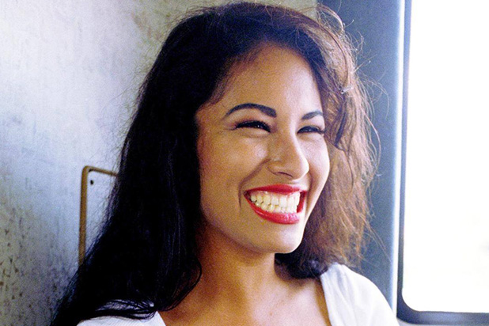

How She Died.
Selena unfortunately died at the young age of 23, on March 31, 1995. She was shot and killed by Yolanda Saldivar who was the president of her fan club. She was suspected of having to steal from the fans of Selena several times and stole from her boutiques. She was forcibly removed from being the president and this caused her to become vindictive. She bought a gun the next day, she attempted to kill her four different times. At one point she returned the gun but went back for it. Her fans saved her once as there were too many people for her to do anything. The day she died Saldivar shot her in her right shoulder hitting a vital organ and she bled out to death within minutes of being shot. Over 60,000 people came to the funeral to pay their respects and millions mourned her death.
She became more famous with her death and later they released Dreaming of You in 1996. It was her English album containing five songs and many traditional Tejano songs. She sold millions of copies. They made a movie about her life starring Jennifer Lopez about a year after. There was a memorial concert in her honor in Houston Astrodome. George W. Bush declared her birthday as Selena day as he was the governor of Texas. She was a really great role model for everyone.